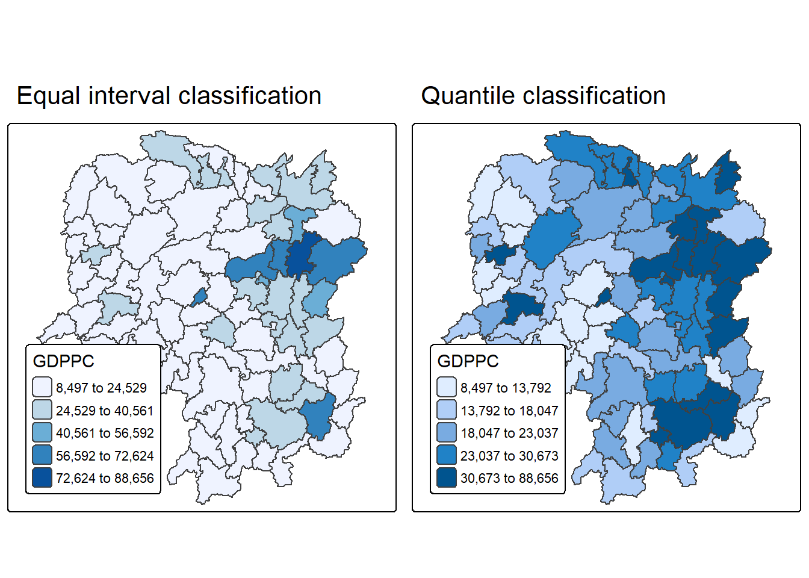
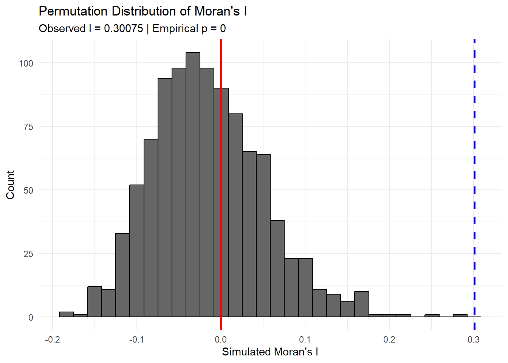

pacman::p_load(sf, spdep, tmap, tidyverse)Hands on Exercise 05
1 Global Measures of Spatial Autocorrelation
1.1 Overview
In this hands-on exercise, we will learn how to compute Global Measures of Spatial Autocorrelation (GMSA) using the spdep package.
By the end of this exercise, you will be able to:
- Import geospatial data using appropriate functions from the sf package.
- Import CSV files using appropriate functions from the readr package.
- Perform relational joins using appropriate join functions from the dplyr package.
- Compute Global Spatial Autocorrelation (GSA) statistics using functions from the spdep package:
- Plot a Moran scatterplot.
- Compute and plot a spatial correlogram using functions from the spdep package.
- Provide a statistically correct interpretation of GSA statistics.
1.2 Getting Started
1.2.1 The analytical question
In spatial policy, one of the main development objective of the local government and planners is to ensure equal distribution of development in the province. Our task in this study, hence, is to apply appropriate spatial statistical methods to discover if development are even distributed geographically. If the answer is No. Then, our next question will be “is there sign of spatial clustering?”. And, if the answer for this question is yes, then our next question will be “where are these clusters?”
In this case study, we are interested to examine the spatial pattern of a selected development indicator (i.e. GDP per capita) of Hunan Provice, People Republic of China.
1.2.2 The Study Area
Two data sets will be used in this hands-on exercise, they are:
- Hunan province administrative boundary layer at county level. This is a geospatial data set in ESRI shapefile format.
- Hunan_2012.csv: This csv file contains selected Hunan’s local development indicators in 2012.
1.2.3 Setting the Analytical Tools
Before we get started, we need to ensure that the spdep, sf, tmap, and tidyverse packages of R are installed in your environment.
- sf: for importing and handling geospatial data in R.
- tidyverse: for wrangling attribute data in R.
- spdep: for computing spatial weights and performing global and local spatial autocorrelation analysis.
- tmap: for preparing cartographic-quality choropleth maps.
The following code chunk will:
- Create a package list containing the required R packages.
- Check whether the packages in the list are installed:
- If not installed, RStudio will install the missing packages automatically.
- Load the packages into the R environment.
1.3 Getting the Data Into R Environment
In this section, you will learn how to bring a geospatial data and its associated attribute table into R environment. The geospatial data is in ESRI shapefile format and the attribute table is in csv fomat.
1.3.1 Import shapefile into r environment
The code chunk below uses st_read() of sf package to import Hunan shapefile into R. The imported shapefile will be simple features Object of sf.
hunan <- st_read(dsn = "data/geospatial",
layer = "Hunan")Reading layer `Hunan' from data source
`C:\govanzz\ISSS626_GEO_AUG_2025\Hands-on_Ex\Hands-on_Ex05\data\geospatial'
using driver `ESRI Shapefile'
Simple feature collection with 88 features and 7 fields
Geometry type: POLYGON
Dimension: XY
Bounding box: xmin: 108.7831 ymin: 24.6342 xmax: 114.2544 ymax: 30.12812
Geodetic CRS: WGS 841.3.2 Import csv file into r environment
Next, we will import Hunan_2012.csv into R by using read_csv() of readr package. The output is R data frame class.
hunan2012 <- read_csv("data/aspatial/Hunan_2012.csv")1.3.3 Performing relational join
The code chunk below will be used to update the attribute table of hunan’s SpatialPolygonsDataFrame with the attribute fields of hunan2012 dataframe. This is performed by using left_join() of dplyr package.
hunan <- left_join(hunan,hunan2012) %>%
select(1:4, 7, 15)1.3.4 Visualising Regional Development Indicator
Now, we are going to prepare a basemap and a choropleth map showing the distribution of GDPPC 2012 by using qtm() of tmap package.
equal <- tm_shape(hunan) +
tm_polygons(fill = "GDPPC",
fill.scale = tm_scale_intervals(
style = "equal",
n = 5,
values = "brewer.blues")) +
tm_borders(fiil_alpha = 0.5) +
tm_layout(legend.position = c("left", "bottom"),
main.title = "Equal interval classification")
quantile <- tm_shape(hunan) +
tm_polygons(fill = "GDPPC",
fill.scale = tm_scale_intervals(
style = "quantile",
n = 5)) +
tm_borders(fiil_alpha = 0.5) +
tm_layout(legend.position = c("left", "bottom"),
main.title = "Quantile classification")
tmap_arrange(equal,
quantile,
asp=1,
ncol=2)
1.4 Global Measures of Spatial Autocorrelation
In this section, we will learn how to compute global spatial autocorrelation statistics and to perform spatial complete randomness test for global spatial autocorrelation.
1.4.1 Computing Contiguity Spatial Weights
Before we can compute the global spatial autocorrelation statistics, we need to construct a spatial weights of the study area. The spatial weights is used to define the neighbourhood relationships between the geographical units (i.e. county) in the study area.
In the code chunk below, poly2nb() of spdep package is used to compute contiguity weight matrices for the study area. This function builds a neighbours list based on regions with contiguous boundaries. If you look at the documentation you will see that you can pass a “queen” argument that takes TRUE or FALSE as options. If you do not specify this argument the default is set to TRUE, that is, if you don’t specify queen = FALSE this function will return a list of first order neighbours using the Queen criteria.
More specifically, the code chunk below is used to compute Queen contiguity weight matrix.
wm_q <- poly2nb(hunan,
queen=TRUE)
summary(wm_q)Neighbour list object:
Number of regions: 88
Number of nonzero links: 448
Percentage nonzero weights: 5.785124
Average number of links: 5.090909
Link number distribution:
1 2 3 4 5 6 7 8 9 11
2 2 12 16 24 14 11 4 2 1
2 least connected regions:
30 65 with 1 link
1 most connected region:
85 with 11 linksThe summary report above shows that there are 88 area units in Hunan. The most connected area unit has 11 neighbours. There are two area units with only one neighbours.
1.4.2 Row-standardised weights matrix
Next, we need to assign weights to each neighboring polygon. In our case, each neighboring polygon will be assigned equal weight (style=“W”). This is accomplished by assigning the fraction 1/(#ofneighbors) to each neighboring county then summing the weighted income values. While this is the most intuitive way to summaries the neighbors’ values it has one drawback in that polygons along the edges of the study area will base their lagged values on fewer polygons thus potentially over- or under-estimating the true nature of the spatial autocorrelation in the data. For this example, we’ll stick with the style=“W” option for simplicity’s sake but note that other more robust options are available, notably style=“B”.
rswm_q <- nb2listw(wm_q,
style="W",
zero.policy = TRUE)
rswm_qCharacteristics of weights list object:
Neighbour list object:
Number of regions: 88
Number of nonzero links: 448
Percentage nonzero weights: 5.785124
Average number of links: 5.090909
Weights style: W
Weights constants summary:
n nn S0 S1 S2
W 88 7744 88 37.86334 365.91471.5 Global Measures of Spatial Autocorrelation: Moran’s I
In this section, we will learn how to perform Moran’s I statistics testing by using moran.test() of spdep.
1.5.1 Maron’s I test
The code chunk below performs Moran’s I statistical testing using moran.test() of spdep.
moran.test(hunan$GDPPC,
listw=rswm_q,
zero.policy = TRUE,
na.action=na.omit)
Moran I test under randomisation
data: hunan$GDPPC
weights: rswm_q
Moran I statistic standard deviate = 4.7351, p-value = 1.095e-06
alternative hypothesis: greater
sample estimates:
Moran I statistic Expectation Variance
0.300749970 -0.011494253 0.004348351 The Moran’s I test shows I = 0.3007 with z = 4.735 and p = 1.095e-06 (alternative = “greater”). We therefore reject the null hypothesis of no spatial autocorrelation and conclude there is significant positive spatial autocorrelation in GDP per capita across Hunan counties—neighboring counties tend to have similar GDPPC values (high-with-high, low-with-low). The magnitude (~0.30) suggests moderate clustering rather than randomness.
1.5.2 Computing Monte Carlo Moran’s I
The code chunk below performs a permutation test for Moran’s I statistic by using moran.mc() of spdep. A total of 1000 simulations will be performed.
set.seed(1234)
bperm= moran.mc(hunan$GDPPC,
listw=rswm_q,
nsim=999,
zero.policy = TRUE,
na.action=na.omit)
bperm
Monte-Carlo simulation of Moran I
data: hunan$GDPPC
weights: rswm_q
number of simulations + 1: 1000
statistic = 0.30075, observed rank = 1000, p-value = 0.001
alternative hypothesis: greaterThe permutation test shows a Moran’s I = 0.30075 with a p-value = 0.001, which is far below the typical significance level (e.g., 0.05).
Therefore, we reject the null hypothesis of spatial randomness.
This indicates that GDP per capita values across Hunan counties exhibit significant positive spatial autocorrelation, meaning areas with high (or low) GDPPC tend to cluster near each other rather than being randomly distributed.
1.5.3 Visualising Monte Carlo Moran’s I
It is always good practice to examine the simulated Moran’s I test statistics in greater detail. This can be done by plotting the distribution as a histogram using the code chunk below.
In the code below, base R’s hist() and abline() are used.
mean(bperm$res[1:999])[1] -0.01504572var(bperm$res[1:999])[1] 0.004371574summary(bperm$res[1:999]) Min. 1st Qu. Median Mean 3rd Qu. Max.
-0.18339 -0.06168 -0.02125 -0.01505 0.02611 0.27593 hist(bperm$res,
freq=TRUE,
breaks=20,
xlab="Simulated Moran's I")
abline(v=0,
col="red") 
Statistical observation
- The permutation distribution of Moran’s I is centered near 0 (mean ≈ –0.015, var ≈ 0.00437), as expected under spatial randomness.
- The observed Moran’s I = 0.30075 lies far in the right tail of this distribution.
- The Monte-Carlo p-value = 0.001, so we reject H₀ (no spatial autocorrelation) and conclude significant positive spatial autocorrelation in GDPPC.
ggplot2 version of the histogram
library(ggplot2)
# sims: the permutation distribution; obs: observed Moran's I
sims <- bperm$res[1:999] # 999 simulated values
obs <- as.numeric(bperm$statistic) # observed Moran's I
p_emp <- mean(sims >= obs) # empirical one-sided p-value
df <- data.frame(sim = sims)
ggplot(df, aes(x = sim)) +
geom_histogram(bins = 30, fill = "grey40", color = "black") +
geom_vline(xintercept = 0, color = "red", linewidth = 1) +
geom_vline(xintercept = obs, linetype = "dashed", color = "blue", linewidth = 1) +
expand_limits(x = obs) +
labs(
title = "Permutation Distribution of Moran's I",
x = "Simulated Moran's I",
y = "Count",
subtitle = paste0("Observed I = ", round(obs, 5),
" | Empirical p = ", signif(p_emp, 3))
) +
theme_minimal()
1.6 Global Measures of Spatial Autocorrelation: Geary’s C
In this section, we will learn how to perform Geary’s C statistics testing by using appropriate functions of spdep package.
1.6.1 Geary’s C test
The code chunk below performs Geary’s C test for spatial autocorrelation by using geary.test() of spdep.
geary.test(hunan$GDPPC, listw=rswm_q)
Geary C test under randomisation
data: hunan$GDPPC
weights: rswm_q
Geary C statistic standard deviate = 3.6108, p-value = 0.0001526
alternative hypothesis: Expectation greater than statistic
sample estimates:
Geary C statistic Expectation Variance
0.6907223 1.0000000 0.0073364 Statistical conclusion
- The Geary’s C test produced a statistic of 0.6907, which is significantly lower than 1 (the expected value under spatial randomness).
- The associated p-value = 0.0001526 is much less than 0.05, so we reject the null hypothesis of no spatial autocorrelation.
- A Geary’s C value below 1 indicates positive spatial autocorrelation, meaning that counties with similar GDP per capita values are spatially clustered together.
- This result supports the conclusion that GDPPC values are not randomly distributed, but instead show spatial dependence and similarity among neighboring regions.
1.6.2 Computing Monte Carlo Geary’s C
The code chunk below performs permutation test for Geary’s C statistic by using geary.mc() of spdep.
set.seed(1234)
bperm=geary.mc(hunan$GDPPC,
listw=rswm_q,
nsim=999)
bperm
Monte-Carlo simulation of Geary C
data: hunan$GDPPC
weights: rswm_q
number of simulations + 1: 1000
statistic = 0.69072, observed rank = 1, p-value = 0.001
alternative hypothesis: greaterStatistical conclusion
- The Monte Carlo permutation test for Geary’s C produced a statistic of 0.69072, which is significantly lower than the expected value of 1 under spatial randomness.
- The p-value = 0.001 indicates strong evidence against the null hypothesis of no spatial autocorrelation.
- Since the observed Geary’s C is less than 1, we conclude that there is significant positive spatial autocorrelation in GDP per capita.
- This means that regions with similar GDPPC values tend to be spatially clustered, rather than randomly distributed across Hunan province.
1.6.3 Visualising the Monte Carlo Geary’s C
Next, we will plot a histogram to reveal the distribution of the simulated values by using the code chunk below.
mean(bperm$res[1:999])[1] 1.004402var(bperm$res[1:999])[1] 0.007436493summary(bperm$res[1:999]) Min. 1st Qu. Median Mean 3rd Qu. Max.
0.7142 0.9502 1.0052 1.0044 1.0595 1.2722 hist(bperm$res, freq=TRUE, breaks=20, xlab="Simulated Geary c")
abline(v=1, col="red") 
Statistical observation
- The permutation distribution of Geary’s C is centered near 1.0044, which is close to the expected value of 1 under spatial randomness.
- The observed Geary’s C statistic (0.69072) is located far to the left tail of the simulated distribution, indicating it is significantly lower than expected by chance.
- Since the observed statistic is much less than 1, we reject the null hypothesis of no spatial autocorrelation.
- This provides strong evidence of positive spatial autocorrelation, meaning that regions with similar GDP per capita values are spatially clustered rather than randomly distributed.
1.7 Spatial Correlogram
Spatial correlograms are great to examine patterns of spatial autocorrelation indata or model residuals. They show how correlated are pairs of spatial observations when you increase the distance (lag) between them - they are plots of some index of autocorrelation (Moran’s I or Geary’s c) against distance.Although correlograms are not as fundamental as variograms (a keystone concept of geostatistics), they are very useful as an exploratory and descriptive tool. For this purpose they actually provide richer information than variograms.
1.7.1 Compute Moran’s I correlogram
In the code chunk below, sp.correlogram() of spdep package is used to compute a 6-lag spatial correlogram of GDPPC. The global spatial autocorrelation used in Moran’s I. The plot() of base Graph is then used to plot the output.
MI_corr <- sp.correlogram(wm_q,
hunan$GDPPC,
order=6,
method="I",
style="W")
plot(MI_corr)
By plotting the output might not allow us to provide complete interpretation. This is because not all autocorrelation values are statistically significant. Hence, it is important for us to examine the full analysis report by printing out the analysis results as in the code chunk below.
print(MI_corr)Spatial correlogram for hunan$GDPPC
method: Moran's I
estimate expectation variance standard deviate Pr(I) two sided
1 (88) 0.3007500 -0.0114943 0.0043484 4.7351 2.189e-06 ***
2 (88) 0.2060084 -0.0114943 0.0020962 4.7505 2.029e-06 ***
3 (88) 0.0668273 -0.0114943 0.0014602 2.0496 0.040400 *
4 (88) 0.0299470 -0.0114943 0.0011717 1.2107 0.226015
5 (88) -0.1530471 -0.0114943 0.0012440 -4.0134 5.984e-05 ***
6 (88) -0.1187070 -0.0114943 0.0016791 -2.6164 0.008886 **
---
Signif. codes: 0 '***' 0.001 '**' 0.01 '*' 0.05 '.' 0.1 ' ' 1Statistical observation
- The Moran’s I correlogram shows how spatial autocorrelation of GDP per capita changes with increasing spatial lags.
- For the first and second lags, Moran’s I values (0.3008 and 0.2060) are positive and statistically significant (p < 0.001), indicating strong positive spatial autocorrelation — nearby regions tend to have similar GDPPC values.
- At the third lag (0.0668), Moran’s I remains positive but the strength of autocorrelation decreases and is only marginally significant.
- Beyond the fourth lag, Moran’s I values become insignificant or negative, with significant negative values at the fifth (–0.1530) and sixth (–0.1187) lags, suggesting spatial dispersion or dissimilarity at larger distances.
- Overall, this pattern indicates that positive spatial clustering is strongest at short distances, but weakens and turns negative as distance increases, revealing a spatial structure where similarity diminishes with spatial separation.
1.7.2 Compute Geary’s C correlogram and plot
In the code chunk below, sp.correlogram() of spdep package is used to compute a 6-lag spatial correlogram of GDPPC. The global spatial autocorrelation used in Geary’s C. The plot() of base Graph is then used to plot the output.
GC_corr <- sp.correlogram(wm_q,
hunan$GDPPC,
order=6,
method="C",
style="W")
plot(GC_corr)
Similar to the previous step, we will print out the analysis report by using the code chunk below.
print(GC_corr)Spatial correlogram for hunan$GDPPC
method: Geary's C
estimate expectation variance standard deviate Pr(I) two sided
1 (88) 0.6907223 1.0000000 0.0073364 -3.6108 0.0003052 ***
2 (88) 0.7630197 1.0000000 0.0049126 -3.3811 0.0007220 ***
3 (88) 0.9397299 1.0000000 0.0049005 -0.8610 0.3892612
4 (88) 1.0098462 1.0000000 0.0039631 0.1564 0.8757128
5 (88) 1.2008204 1.0000000 0.0035568 3.3673 0.0007592 ***
6 (88) 1.0773386 1.0000000 0.0058042 1.0151 0.3100407
---
Signif. codes: 0 '***' 0.001 '**' 0.01 '*' 0.05 '.' 0.1 ' ' 1Statistical conclusion
- The Geary’s C correlogram provides insight into how spatial autocorrelation changes across increasing spatial lags.
- At lower lags (e.g., lag 1 and 2), Geary’s C values are significantly less than 1, indicating strong positive spatial autocorrelation — nearby regions tend to have similar GDP per capita values.
- As the spatial lag increases, the Geary’s C statistic approaches or exceeds 1, suggesting that spatial autocorrelation weakens and may transition towards randomness or even negative autocorrelation.
- This pattern confirms that spatial dependence is strongest at short distances and gradually diminishes as the spatial separation between regions increases.